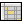

![[open.png]](open.png) File | Open...
File | Open...
The File menu lets you set preferences, print, and work with documents.
File | New...
Create a new document. The new window has a made-up title like unnamed1. You give the document a real name when you save it.
File | Open...
Open an existing document. You can also open files by dragging and dropping them on lmi.
![[close.png]](close.png) File | Close
File | Close
Close the current document.
![[save.png]](save.png) File | Save
File | Save
Save the current document, without changing its name or location. If it’s a new document, this works just like the File | Save as command.
File | Save as...
Save the current document under a new name or in a new location. A file that already exists isn’t overwritten unless you confirm that you really want to replace it.
File | Print
Print the current document. See other print commands on the Census menu.
File | Print to PDF
Print the current document to a PDF file.
File | Default...
Edit the default cell, which is the basis for any new case you create.
File | Preferences...
Manage preferences.
File | Exit
Exit lmi. If you’ve changed any document without saving it, you’re prompted to save before exiting.
At the bottom of the File menu is a list of the last nine files you’ve worked with. Pick a file from that list to open it.
The Illustration menu lets you work with individual cases.
![[edit-cell.png]](edit-cell.png) Illustration | Edit cell...
Illustration | Edit cell...
Edit this cell.
Illustration | Copy calculation summary
Copy calculation summary to the clipboard.
Illustration | Copy full illustration data
Copy full illustration data to the clipboard.
The Census menu lets you work with group cases.
Census | Edit cell...
Edit the selected cell. Highlight any cell to select it for editing.
Census | Edit class defaults...
Edit defaults for the selected cell’s class. If you make any changes and press OK, you can optionally apply the changes to all cells in this class.
![[edit-case.png]](edit-case.png) Census | Edit case defaults...
Census | Edit case defaults...
Edit case defaults. These defaults are used whenever you add a new cell to the case. If you make any changes and press OK, you can optionally apply the changes to all cells and all classes in the census.
Census | Run cell
Run selected cell and show its calculation summary.
Census | Run case
Run all cells and show a composite calculation summary.
Print an illustration for every cell and a composite of all cells. This may use a lot of paper.
![[print-case-pdf.png]](print-case-pdf.png) Census | Print case to PDF
Census | Print case to PDF
Print an illustration for every cell and a composite of all cells, to PDF files rather than to the printer.
![[write-spreadsheet.png]](write-spreadsheet.png) Census | Print case to spreadsheet
Census | Print case to spreadsheet
Run every cell and a composite of all cells, and write the results to a spreadsheet file.
Census | Print group roster to spreadsheet
Run every cell, and write a one-line summary of each to a spreadsheet file.
![[copy-census.png]](copy-census.png) Census | Copy census
Census | Copy census
Copy data from the census manager to the clipboard.
![[paste-census.png]](paste-census.png) Census | Paste census
Census | Paste census
Fill the census by pasting data.
![[insert-rows.png]](insert-rows.png) Census | Add cell
Census | Add cell
Add a new cell, based on case defaults, at the bottom of the census.
Census | Delete cell(s)
Delete selected cells.
 Census | Varying column width
Vary each column’s width to show its full contents.
Census | Fixed column width
Show all columns with the same fixed width. Any field that’s too long to fit is cut off so you can see more columns at a time.
The Window menu lets you rearrange the screen.
Window | Cascade
Make all windows the same size, and overlap them so their title bars are all visible.
Window | Next
Go to the next window.
Window | Previous
Go to the previous window.
Window | Tile horizontally
Make all windows the same size, and stack them side by side without overlap.
Window | Tile vertically
Make all windows the same size, and stack them top to bottom without overlap.
The Help menu lets you read lmi’s documentation. It also tells you what version you’re using, and shows the copyright and license.
![[help.png]](help.png) Help | User manual
Help | User manual
Browse the user manual.
Help | About
Show copyright, license, and version.
Copyright © 1998, 1999, 2000, 2001, 2002, 2003, 2004, 2005, 2006, 2007, 2008, 2009, 2010, 2011, 2012, 2013, 2014, 2015, 2016, 2017, 2018, 2019, 2020, 2021, 2022 Gregory W. Chicares. This program, including its documentation, is free software. Read the terms under which you can redistribute and modify it.
Maintained by Gregory W. Chicares. The latest version of this file can be found at the lmi website.
![[print-case.png]](print-case.png) Census | Print case
Census | Print case